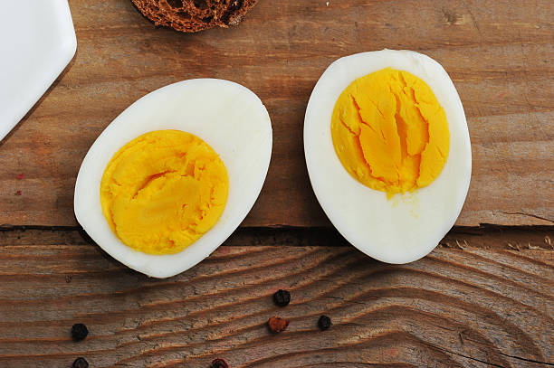

Ovo

Descrição
Como cozinhar ovo? Os três passos estão bem descritos aqui. O segredo de abrir o ovo e encontrar a gema do jeitinho que você quer (mole, cremosa ou dura) é cronometrar o tempo de cozimento.
Ingredientes
Modo de preparo
- Retire o ovo da geladeira alguns minutos antes de colocar para cozinhar — isso evita que a casca rache com o choque térmico.
- Leve uma panela pequena com água ao fogo médio para ferver. Com a ajuda de uma colher, e com cuidado, mergulhe o ovo na água e abaixe o fogo — colocar o ovo com cuidado evita que ele bata no fundo da panela e trinque. Se preferir, com uma agulha, faça um furinho na base do ovo e adicione caldo de limão à água (isso ajuda a manter a casca do ovo sem rachaduras).
- Agora é só contar os minutos: Para a gema cozida, mas sem passar do ponto, 12 minutos
Para a gema cremosa, 7 minutos
Para o ovo mollet (clara cozida e gema mais líquida), 6 minutos
Para o ovo quente (clara cozida macia e gema bem mole), 4 minutos
Home